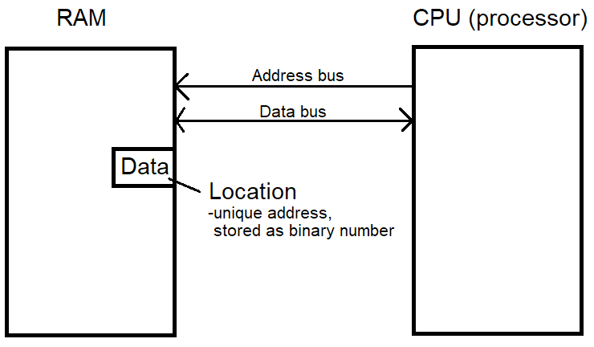

Unit 1 - Software Design and Development
Process of making software
There are seven stages to making software.
- Analysis
- Design
- Implementation
- Testing
- Documentation
- Evaluation
- Maintenance
You can use the mnemonic 'A Dance In The Dark Every Monday' to remember this.
Design stage
There are 3 design methods in nat 5.
- Structure Charts
- Pseudocode
- Flow chart
However, there is also another that is only used for screen layouts, not code.
Wireframes are used as a design technique for screen layouts. They help show the User Interface (UI).
I'm going to link the sqa page for these techniques, as they're very nice and save me effort.
SQA Course Specifications
Look at pages 42 - 49.
Besides those pages, theres actually quite a bit of good stuff there.
Predefined functions
The three pre-defined functions for N5 are random, round, and length.
Parameters are arguments inside the brackets of functions.
e.g. round(2.53, 2) - the parameters are 2.53 and 2.
Assignment and arithmetic operations
Assignment is giving a variable a value.
e.g. age = 7
There are 5 different arithmetic operations for N5.
- Subtraction -
-
- Addition -
+
Note - this is the same operator for concatenation in python.
- Multiplication -
*
- Divison -
/
- Exponentiation -
^
Note - In python exponentiation is **.
Concatenation
Concatenation is joining text strings together to make a new text string.
An example in python:
print("Hello " + "World!")
Hello World!
Loops
There are two loops.
- Fixed loop
- A loop that repeats a sequence of code a set number of times.
Never call this a for loop.
- Conditional loop
- A loop that repeats code until a condition is met.
Never call this a while loop.
Examples of standard algorithms in Python
- Input validation
mark = int(input("Enter mark"))
while mark < 0 or mark > 10:
print("mark must be between 0 and 10")
mark = int(input("re-entermark"))
#end while
- Running total
for counter in range(0,3):
mark = int(input("Enter mark"))
total = total + mark
#end for
- Traversing a 1-D array
ages = [8,10,12]
for counter in range(0,3):
print(ages[counter])
#end for
Types of errors
There are 3 types of errors.
- Syntax
- An error in the spelling or grammar used when coding. The program will not execute.
e.g. print("hi
- Logic
- An error in the logic of the code. The program will execute, but will give unexpected results.
e.g. areaOfCircle = 3.14 * radius
- Runtime
- An error that only becomes evident in runtime.
e.g. sum = number / 0
Types of variable
There are 5 types of variable. (although i dont know if you need to know their definitions)
- Integer
- A whole number. Can be negative or positive, including 0.
- Real (float)
- A number with a fractional part. e.g.
3.5
Note - Call them real numbers in the exam, not floats.
- String
- Any text. Even
"" would count as a string.
- Char
- Stores one character.
- Boolean
- Something that has two possible values, true or false.
Arrays
An array is a single variable with a series of values. It is a data structure.
Operators
> - greater than< - less than>= - greater than or equal<= - less than or equal!= - not equal== - equal
Note - the SQA displays these as >, <, ≥, ≤, ≠, = in the course specifications.
Logical operators
These are used to include two or more parts of a condition, or the opposite of a condition.
- AND
- Evaluates as true when all parts of the condition are true.
e.g. if points > 16 and average > 5
- OR
- Evaluates as true if one of the conditions is true.
e.g. if age > 18 or money < 200
- NOT
- Returns the opposite of the condition.
e.g. IF NOT (score = 0)
Note - this is psuedocode unlike the others, which were in python.
Selection constructs using complex conditional statements
This sounds very complicated, but its not.
A conditional statement can be simple with only one condition.
e.g. age > 18
A complex conditional statement is a conditional statement with more than one condition.
e.g. age > 18 and hasDrivingLiscence == true,
NOT (score = 0)
A selection construct is a section of code that is only run if a condition is met (if, while).
Essentially just a conditional statement with one or more logical operators.
Program Readability
There are 4 parts to program readability.
- Internal commentary
- Indentation
- White space
- Meaningful indentifiers (sensible variable names)
Test data
For example, if age has to be between 18 and 30.
- Normal test data
- Test data that is expected and should be accepted.
e.g. age is 23.
- Extreme test data
- Test data that falls at the boundary of any possible ranges.
e.g. age is 30.
- Exceptional test data
- Test data that the progrem should not accept.
e.g. age is 96.
Fitness for purpose & Robustness
Software is deemed fit for purpose if it meets the requiremnets determined at the analysis phase.
Software is deemed robust if it can cope with unexpected or incorrect input.
Unit 3 - Computer theory or something i forgot
Binary
Binary is the base 2 number system. It is represented with 1s and 0s.
Base 10 (our number system) is called denary.
1 bit stores 1 or 0.
There are 8 bits in 1 byte.
To find the max number you can store with a certain number of bits, use the formula 2n-1, where n = number of bits.
The minimum is always 0.
To find the total number of numbers you can store with a certain number of bits, use the formula 2n, where n = number of bits.
e.g. with 7 bits:
- max = 27-1 = 127
- min = 0
- total = 27 = 128
Converting binary to denary
Read the binary number from right to left In that order, each binary digit is worth 2x more than the previous.
For example, the rightmost binary digit is 1. The second rightmost is 2. The third is 4. The fourth is 8. And so on.
| 2n |
27 |
26 |
25 |
24 |
23 |
22 |
21 |
20 |
| 2n in denary |
128 |
64 |
32 |
16 |
8 |
4 |
2 |
1 |
| Example binary number |
1 |
1 |
0 |
0 |
0 |
1 |
0 |
1 |
The example binary number of 11000101 is displayed above.
To find what this is equal to, look at each column with a 1 in the digit. Then add the denary equivalent to the total
So 11000101 = 128+64+4+1 = 197.
Converting denary to binary
- Find the biggest power of 2 that fits into the number.
- Write a '1' and then subtract that denary equivalent from the total number.
- Move onto the previous power of two. If it is too big to fit into the number, then write a 0 and don't subtract anything from the total. Otherwise, do step 2.
- Repeat step 3 until you reach 2^0, even if you reach 0 at the total before the last digit.
e.g. Convert 99 into binary
- The biggest power of 2 that fits into 99 is 26.
- 64 (26) fits into 99. 99 - 64 = 35. 1
- 32 (25) fits into 35. 35 - 32 = 3. 1
- 16 (24) does not fit into 3. 0
- 8 (23) does not fit into 3. 0
- 4 (22) does not fit into 3. 0
- 2 (21) fits into 3. 1
- 1 (20) fits into 1. 1
So the final answer is 1100011. Note - Sometimes a question will say 'convert into a 8 bit binary number. In this case, add 0's at the start until it reaches 8 bits in length. So 99 would be 01100011 in 8 bits.
Real numbers
A real number is a number with a fractional part. So as an example:
A computer stores real numbers using a mantissa and exponent.
Note - This is the answer to a 2 mark question - 'How do computers store real numbers?' You get one mark for writing 'mantissa' and one for writing 'exponent'.
0.7894 x 103
- Mantissa - highlighted in pink - 7894
Never write the '0.'
- Exponent - highlighted in blue (aqua) - 3
Never write the 'x 10'
It doesn't matter if the number is given in binary. Simply write what is there - no need to convert.
0.11011 x 2110
- Mantissa - highlighted in pink - 11011
- Exponent - highlighted in blue (aqua) - 110
0.1875 x 10110
- Mantissa - highlighted in pink - 1875
- Exponent - highlighted in blue (aqua) - 110
Bitmap graphics
These are stored as a grid of pixels, with each pixel stored in binary.
They have a large file size. It never goes up if image changes (unless resolution or bit depth changes).
In black and white, the bit depth is 1. Meaining, each pixel = 1 bit.
In true colour, the bit depth is 24. Meaning, each pixel = 24 bits.
Vector graphics
These are stored as Objects + Attributes.
They have a small file size. If more shapes are added, file size goes up.
There are 4 objects you need to know.
- Rectangle (can look like square)
- Ellipse (looks like an oval + can look like circle)
- Line
- Polygon (anything else not covered by the previous)
There are 3 attributes you need to know. You don't need to know the values for them.
- Line colour
- Fill colour
- XY coordinates
High vs Low level language
A high level programming language is close to human languages.
A low level programming language is close to machine instructions.
Interpreter
A programming interpreter translates each instruction in turn.
It returns a single error.
Note - Never say translates line-by-line. This applies to both interpreters and compilers.
It must be installed on the machine, and the code needs to be translated every time it is run. This leads to:
- More backing storage
- More RAM
- More processing power
Best for dev phase because it returns a single error.
Compiler
A programming language compiler translates an entire program's source code into machine code at once.
It returns many errors.
When error free, it creates Object Code.
- Object code - 111010101... etc.
- Object code does not need further translation.
RAM and buses
RAM is very fast access.
Buses are wires.

Each location in the RAM has a unique address, which is stored as a binary number.
The address bus carries the address of the location.
The data bus transfers data from CPU to RAM, or RAM to CPU.
CPU (processor)
The CPU has 3 parts.
- ALU (arithmetic logic unit)
- The ALU carries out arithmetic and logical operations.
You need to know what it stands for - Arithmetic Logic Unit
- Registers
- Temporary storage location. Very, VERY fast access (faster than RAM).
- Control Unit
- Manages system events + decides if read or write operation.
Firewalls and encryption
Encryption allows secure transit of data.
A firewall blocks traffic and looks for odd behavior. It keeps your computer system secure.
Energy usage
There are a couple of ways to reduce power consumption.
- Lower brightness of monitor
- Turn machine off when not in use
- Put machine on standby mode (to sleep) when not in use